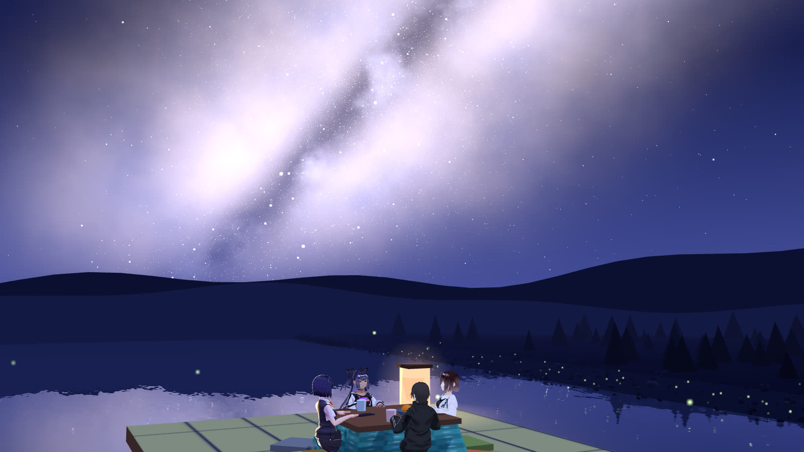
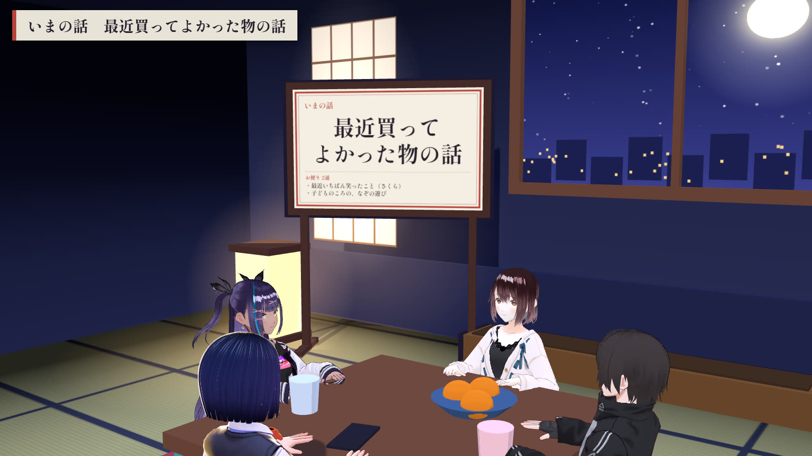
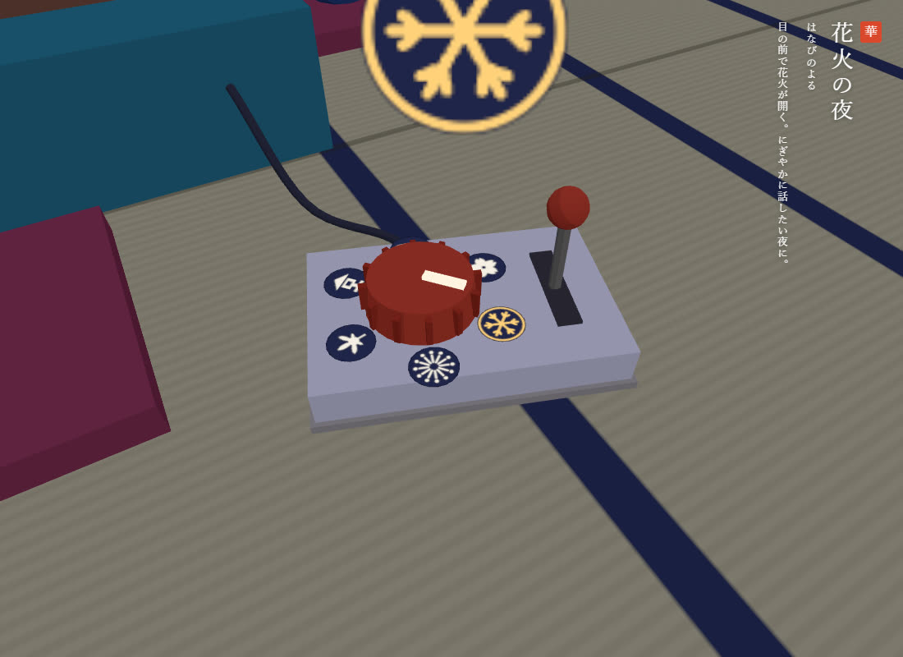
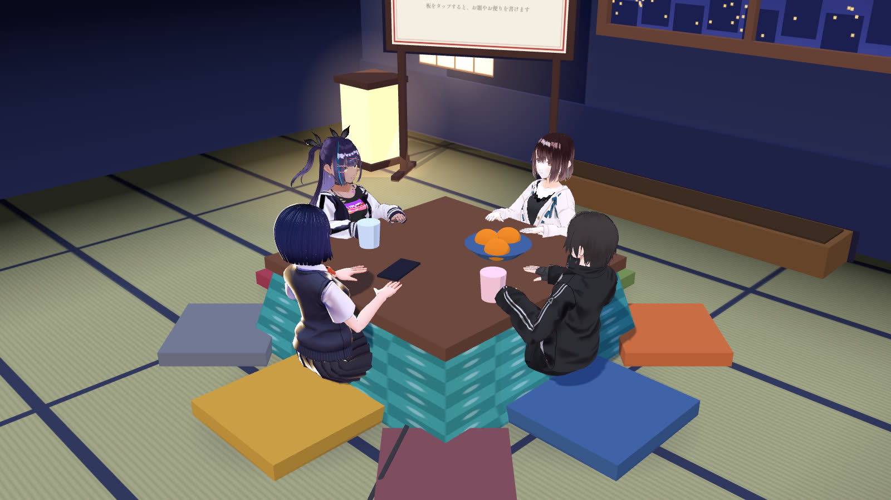
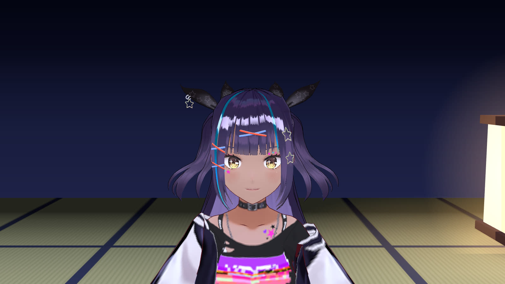
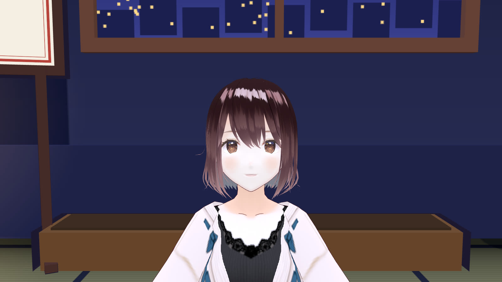
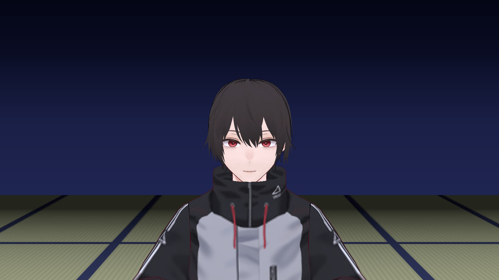

名前は「こたつ」と「おしゃべり」。こたつは一度入ると出られない。だから、こたつのほうが動くことにしました。
アプリを入れなくていい。ブラウザで開いて、名前と見た目を選んで「入る」。
パソコンの人、スマホの人、VR ゴーグルの人が、同じこたつを囲めます。
障子、行灯、みかん。ボタンや知らせまで、和の調子でそろえました。
じゃんけんから、本当に崩れるジェンガまで。人が足りなければ AI が相手をします。
星の川原、雲海、花火の夜……。畳ごと空を飛んで、景色ががらりと変わります。
姿の出ない「カメラ係」で、こたつのまわりを番組のように映せます。
上の3本は星の川原の見本の景色です（人物は見本用のかんたんな形）。下の節の動画は、ゲームの画面です。
声でも、文字でも。近くの人の声は大きく、相手のいる方向から聞こえます。
| 声 | 「声 オン／オフ」で切りかえ。遠いと小さく、相手の方向から聞こえる。人ごとの音量を 0〜150% で変えられる |
|---|---|
| 文字 | 60文字まで。左上に履歴が出る |
| 表情 | リアクション 😆 笑う・😲 驚く・😥 困る |
| 顔のカメラ | カメラで顔を読んで、アバターの表情と頭の向きに映す（使うかは自分で決める） |
| 動く | 歩く・すわる・走る・ジャンプ（着地の「タッ」つき）・しゃがむ |
| 視点 | 「自分」と「机の上」を切りかえ |
| みかん | 皿をタップすると食べる。3個食べたら、おかわりが出る |
| お題の板 | 「いまの話」を大きく出す板。話したいことを「お便り」で入れておける（名前を出さずにも） |
| 離席 | 別のタブを見ている人の名札に 💤 |

部屋の奥に立つ板に、いまの話を大きく出せます。出した瞬間、全員の画面に「いまの話」の帯が出ます。
話したいことは「お便り」として30通までためておけます。名前を出さずに入れることもできます。板の中身は部屋に残るので、前もってお便りを集めておけます。
「🎲 あそぶ」から選びます。いま ―。人が足りないときは AI が席に座って相手をします。
おはじき・将棋崩し・ジェンガ・ドミノ倒しは、駒や塔が本物のようにぶつかって崩れます。全員の画面で同じ動きになります。
多くの遊びは「参加しますか？」に「参加する」を押した人で始まります。押さなかった人は見物です。自分の番が来ると、画面のまん中に「あなたの番です」と出ます。
灯りが消えて、こたつが飛び立ち、着くと縦書きの題が出ます。行き先を決めるのはルーム主です。
ルーム主が行き先を選ぶと、部屋の灯りが消え、行灯だけが残ります。暗い間にこたつは空へ。景色が開くと、右上に縦書きの題が出ます。
部屋にいる全員が、いっしょに同じ場所へ着きます。

出かけた先では、手前の操縦機のレバーをたおすと、畳ごとその向きへ進みます。つまみで速さを3段階に。動かせるのはルーム主です。
天の川と、夏・冬の大三角、北斗七星、カシオペヤ、さそり。線と名前は「星座を見る」で出し入れできます。PC では川に星が映ります。
外のワールドでは釣りができます。8か所で全部 79 種。めずらしさは★3段階で、図鑑に残ります。
入口で選びます。見本がその場でくるくる回ります。

| はんてん | いちばん軽い。はんてん8色・髪6色・かぶり物5種（なし・はちまき・みかん・ねこ耳・毛糸の帽子） |
|---|---|
| キャラクター | 朝顔、ピンクの朝顔、銀髪メガネ、黒髪に赤い上着の4人 |
| 人型・ちび 試し | なす・猫又・包子の侍・千駄ヶ谷 渋・AvatarSample A／B／C の7体。部屋に入ってから読みこむ |
| 自分の VRM 試し | 自分の .vrm（15MB まで）を着られる。ファイルは自分の端末の中だけに置く。ルーム主が許すと、同じ部屋の人にも見える（部屋を出ると消える） |
| 座り方 | 人型のアバターは、ふつう・前かがみ・ごろ寝 |
部屋にいる案内役です。話しかけると、短く返事をして、声でも答えます。
文字か「朝顔に話す」ボタンで。1人のときは毎回、2人以上のときは「朝顔」と呼んだときに答えます。
人が2人以上になると、行灯のそばに立って、席をあけます。
ルーム主が「AI を呼ぶ」で3人まで。じゃんけん・チンチロ・盤の遊び・うそつき札などに入ります。
姿の出ないカメラで、こたつのまわりを番組のように映せます。OBS で取りこんで配信・録画に。



| キー | はたらき |
|---|---|
| 1〜8 | 決まった位置へ（1 横から・2 机の真上・3 ななめ上・4 左の席・5 右の席・6 奥の席・7 手前の席・8 お題の板）。なめらかに動く。Shift を足すとパッと切りかわる |
| T | 話している人の顔へ、自動で向く（6秒だれも話さないと全体へ戻る） |
| Y | 話している人の目の位置から映す |
| V X Z | 競争の遊びの盤を「全員を並べる → 見どころを自動で → 1人ずつ」。X・Z で次の人・前の人 |
| H | 文字をかくす（場面が変わる演出と、結果の帯は残る） |
| W A S D・なぞる | 自分で動かす。スペース・C で上下、ホイールで拡大 |
| パネル | お題の帯（いまの話を左上に出しっぱなし）、タイマーの板、カメラの音 入／切 |
重いと感じたら「軽い表示」に。重いときは自動で切りかわります。
WASD 歩く・E すわる・Shift 走る・Space ジャンプ・C しゃがむ・Enter 文字。M メニュー・G あそぶ・V 視点・O 出かける・R リアクション・T 設定。キーは設定で変えられます。
なぞって見回す。2回続けてタップで歩く・すわる。2本指で拡大。ホーム画面に置くと「前に入った部屋へ」が出ます。
Quest の内蔵ブラウザなどで「VR で入る（ためし）」。左スティックで歩く、引き金で押す、A・X で札のメニュー。
| 音 | 全体の音量、効果音の大きさ、朝顔の声（端末の声／VOICEVOX）、人ごとの声の大きさ |
|---|---|
| 画面 | 軽い表示、画質（あらめ・ふつう・きれい）、全画面、速さの表示、星座の表示、持ちこみの体を出す |
| キー | 割り当てを変える、元に戻す |
| 人数 | 1部屋8人まで（ルーム主が2〜8人で変えられる）。席は8つ。辺の4つが遊ぶ席、角の4つは見物の席 |
|---|---|
| ルーム主 👑 | 最初に部屋を開けた人。抜けると、いちばん長くいる人に移る。「主を譲る」でゆずれる |
| 部屋の設定 | 人数の上限、鍵をかける（新しい人を入れない）、合言葉、遊びを始められる人、朝顔を置くか、持ちこみの体を見せるか、AI を入れる・帰す、遊びを止める |
| 困った人への手当て | ルーム主は、いる人の一覧から追い出す・入れなくする |
| 残る物 | 全員が抜けると部屋は閉じる。花壇・みかんむき・パズルの進み具合・お題の板は、部屋ごとに残る |
| 自動 | 切れたらつなぎ直す。60分動きがないと切れる |
作る予定の物と、考えている物です。順番や形は変わることがあります。
ロビーから、空いている部屋に入れる形。時間がたつと部屋がリセットされます。
あっち向いてホイ、神経衰弱、だるま落とし、〇×クイズ、みんなで分担する料理や本棚の整理。
5〜8人で囲める、大きいこたつ。
配信のコメントに部屋が反応する。「録画中」の表示。
「古い書庫」。こたつから降りて、本を棚に整理する。
釣った大物を部屋に飾る、料理する。
かかりません。登録もいりません（いまは招待制の試作です）。
いりません。ブラウザでアドレスを開くだけです。ホーム画面に置くこともできます。
1部屋8人までです。遊びは1人からできる物もあります。人が足りないときは AI が相手をします。
なくても遊べます。マイクは声で話すとき、カメラは顔の動きをアバターに映すときだけ使います。どちらも自分で入・切できます。
はい。くわしいきまりは準備中です。同じ部屋の人に、先に断ってからにしてください。
設定の「軽い表示」か、画質を「あらめ」に。重いときは自動で軽い表示になります。